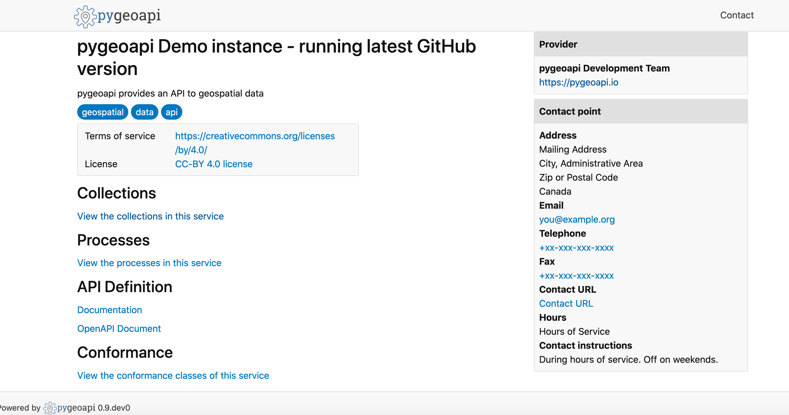
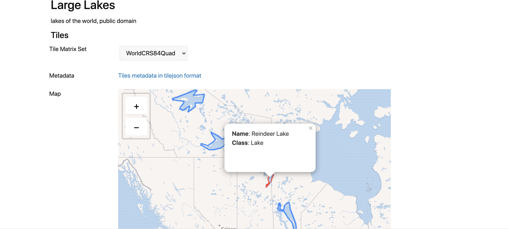
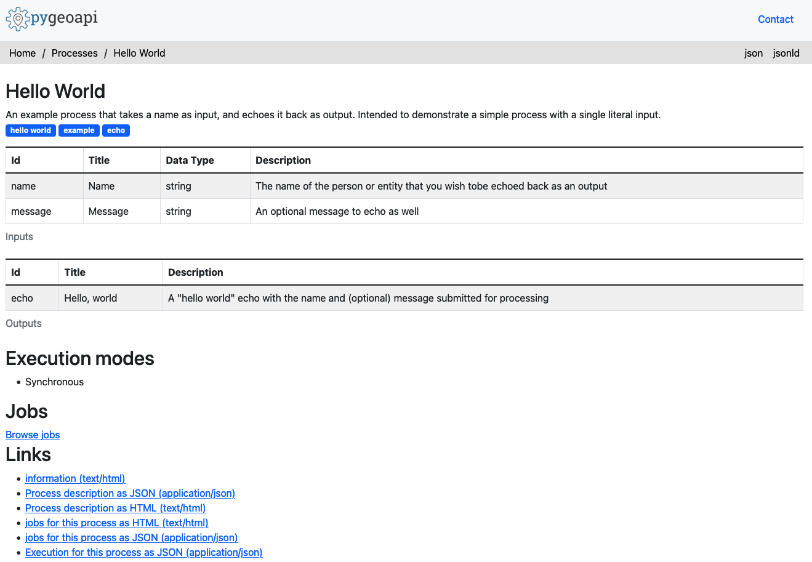
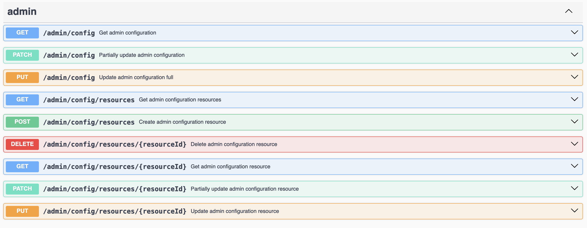
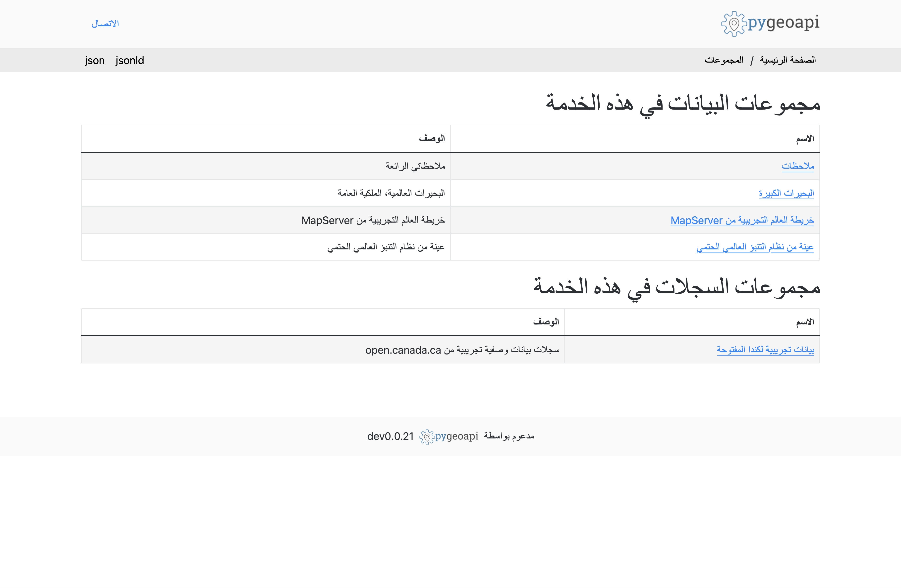

An OGC API to geospatial data


This presentation available at pygeoapi.io/presentations/foss4g2025
Table of contents
- Project overview
- Core capabilities
- Latest developments
- Selected featured projects
- Roadmap
- Support
Project overview
Project overview
 Geopython project
Geopython project- OSGeo Project
- Created by Tom Kralidis in 2018 on Valentine's Day with ❤️
Project Overview
- Geospatial data Web API framework via OGC API
- REST/JSON/OpenAPI/Swagger
- OGC Certified Compliant
- OSGeo Project
- International team (Canada, Netherlands, Greece, Italy, New Zealand, United States, Portugal)
- Numerous core contributors
- 21000 upstream contributors (dependencies)
Install in 5 minutes
# Python 3.12 recommended
python3 -m venv pygeoapi
cd pygeoapi
. bin/activate
git clone https://github.com/geopython/pygeoapi.git
cd pygeoapi
pip3 install -r requirements.txt
pip3 install .
cp pygeoapi-config.yml example-config.yml
vi example-config.yml # edit as required
export PYGEOAPI_CONFIG=example-config.yml
export PYGEOAPI_OPENAPI=example-openapi.yml
pygeoapi openapi generate $PYGEOAPI_CONFIG --output-file $PYGEOAPI_OPENAPI
pygeoapi serve
# in another terminal
curl http://localhost:5000 # or open in a web browser
Technical Overview
- Core abstract API; web framework agnostic (default Flask)
- YAML configuration (metadata, dataset connections)
- Automated OpenAPI document generation and data binding
- Robust plugin framework (data connections, formats, processing)
- Easy deployment (pip install, Docker, K8s, conda, UbuntuGIS)
- Minimal core dependencies

Provider plugin framework
- Features (Elasticsearch, PostgreSQL/PostGIS, Oracle, GDAL, OpenSearch, CSV, GeoJSON, GeoParquet, OGR, MongoDB, Esri, Azure)
- Coverages (Xarray, rasterio)
- Tiles(ZXY directory tree, ZXY url, Elasticsearch, PostgreSQL)
- Records (Elasticsearch, TinyDB)
- WxS facades / bridges (WMS/WMTS, WFS, CSW, STA)
- Implement your own!
Processing framework
- Expose your Python workflow as processes
- Process manager support for job control
- Implement your own!
Implementing your own Plugin
- Develop / propose / maintain as core plugin
- Develop / maintain in your own repository
Implementing your own API
- Add an OGC API, contribute to the core
- Add an ad hoc API
Community Plugins and Themes

github.com/geopython/pygeoapi/wiki/CommunityPluginsThemes -- add yours!
schema.org

- Lower the barrier to data search
- HTML encoding is annotated as schema.org/Dataset to facilitate search engines
- Google dataset search locates pygeoapi datasets
Linked Data - JSON-LD
- JSON-LD provided as additional representation
- Default out of the box functionality for most pygeoapi resources / endpoints
- Additional configuration
Deploying
Numerous deployment options
- PyPI
- UbuntuGIS
- Docker
- See numerous ready to use examples (Kubernetes, OpenShift, AWS Lambda, etc.) at pygeoapi-examples
- Conda
- FreeBSD
Core Capabilities

OpenAPI

OGC API - Features

OGC API - Coverages

OGC API - Records

OGC API - Maps

OGC API - Tiles

OGC API - Processes

OGC API - Environmental Data Retrieval

SpatioTemporal Asset Catalog (STAC) / API

HTML templating

Admin API

Latest developments
Community updates
- Monthly meetings (open to all)
OGC API sprint participation

- Rapid/early adoption of specifications/updates
- Experimentation (servers, clients)
- OGC/OSGeo/ASF Joint Sprint (February 2024)
- Open Standards Code Sprint (July 2024)
- Open Standards Code Sprint (October 2025)
- Collaboration
- OSGeo projects
- OGC API implementing clients/servers
OGC Compliance updates
- OGC API - Tiles (Reference Implementation)
- OGC API - Processes
- OGC API - Features (Reference Implementation)
- OGC API - Environmental Data Retrieval (Reference Implementation)
New plugins
- TinyDB (feature)
- GeoParquet (feature)
- OpenSearch (feature/record)
- PostgreSQL (transactions)
- SensorThings (edr)
RTL rendering and Arabic translations
- Thank you Youssef Harby!

Query/filter refactoring
- Streamline code/use of pygeofilter for all filter handling
- CQL2 JSON
- CQL2 Text
GeoParquet support
- Thank you Leo Ghignone
- Spatial and non-spatial
Fine grained data limiting
- Server wide, collection specific
- Default limits
- Maximum limits
- Distance based limits
More updates
- Custom TileMatrixSet definitions
- Collection level HTML templating
- SQLAlchemy2 update
- Processes: fix support for binary job results
Releases
- March 2025: 0.20
- July 2025: 0.21
- November 2025: 0.22
- February 2026: 0.23
Selected recent projects
Pacific Community (SPC)
Ocean Data Management System
Oceanographic datasets (lidar, satellite, observations, drones)
- OGC API - Records


Australia
Geoscience Australia Linked Data Register
- OGC API - Features

UN/WMO: wis2box
- WMO Information System 2.0
- Event-driven weather/climate/water data exchange
- API component of WMO Reference Implementation
- Over 60 deployments
Portugal
OGC API Service from Direção-Geral do Território (DGT)
- OGC API - Features
- OGC API - Maps
- OGC API - Tiles
Infraestructura de Datos Espaciales de España
Instituto Geográfico Nacional de España
- OGC API - Features, Processes, Maps, Coverages

Roadmap
OGC API - Pub/Sub
- Developing specification on event driven workflow
- Initial implementation at OGC/OSGeo/ASF Joint Sprint (April 2023)
- Following OGC API - Pub/Sub SWG activity

OGC API - Processes - Part 2 - Deploy, Replace, Undeploy
- User defined processes / publishing
- Initial implementation at OGC Code Sprint (July 2024)
- Common workflow language (CWL)
- Using cwltool
Roadmap
- ensure compliance against all OGC API standards that have CITE tests
- OGC CITE GitHub Actions (@ricardogsilva)
- Authentication passthrough
- Custom formatters
- MapScript support for Coverages
- data validation framework (for transactions)
- refactoring Docker images (slim/full)
- more OGC APIs: Moving Features, DGGS, Routes
What about an admin UI to manage the configuration?
- pygeoapi:
- is headless by design
- has an admin API
- can benefit from an admin UI
- An admin UI can live outside of the pygeoapi core (talks to admin API)
Support
Service providers
- training
- setup/installation/deployment
- custom integration
- bug fixing
- features/enhancements
- core development
- maintenance/packaging/distribution
- documentation
Swag!

- Swag available at the OSGeo Redbubble shop
- t-shirts, hoodies, stickers, etc.
- pygeoapi.io/community/#swag
Links
- Home: pygeoapi.io
- Mastodon: noc.social/@pygeoapi
- Docs: docs.pygeoapi.io
- Demo: demo.pygeoapi.io
- GitHub: github.com/geopython/pygeoapi
- Docker: hub.docker.com/r/geopython/pygeoapi
- Chat: gitter.im/geopython/pygeoapi
- Mail: lists.osgeo.org/mailman/listinfo/pygeoapi
Thank you!
@tomkralidis @xbartolone @kalxas @pvgenuchten @justb4 @jorgejesus @doublebyte1